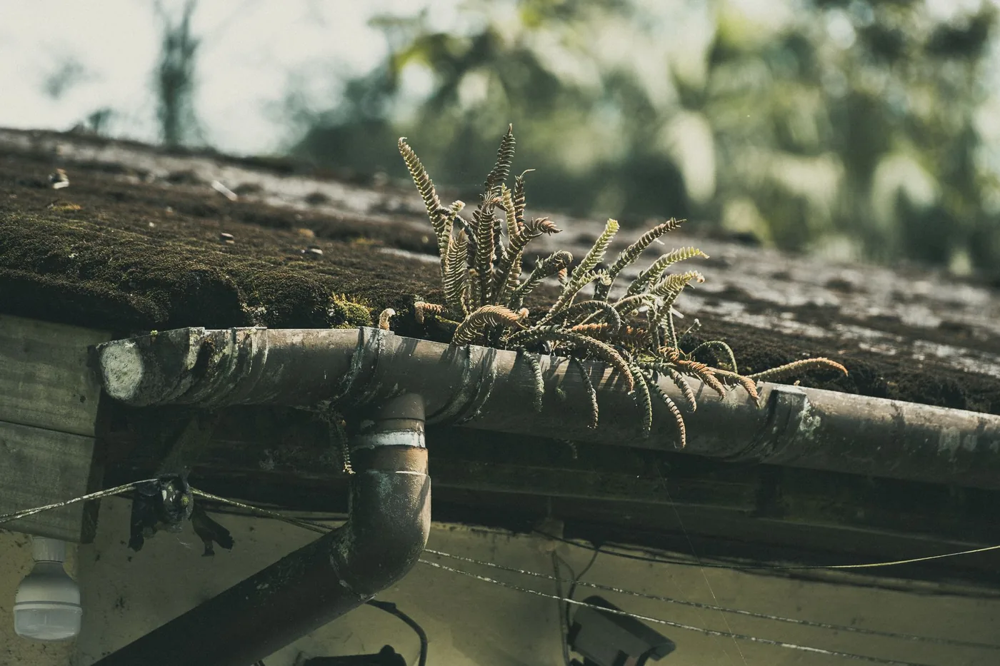
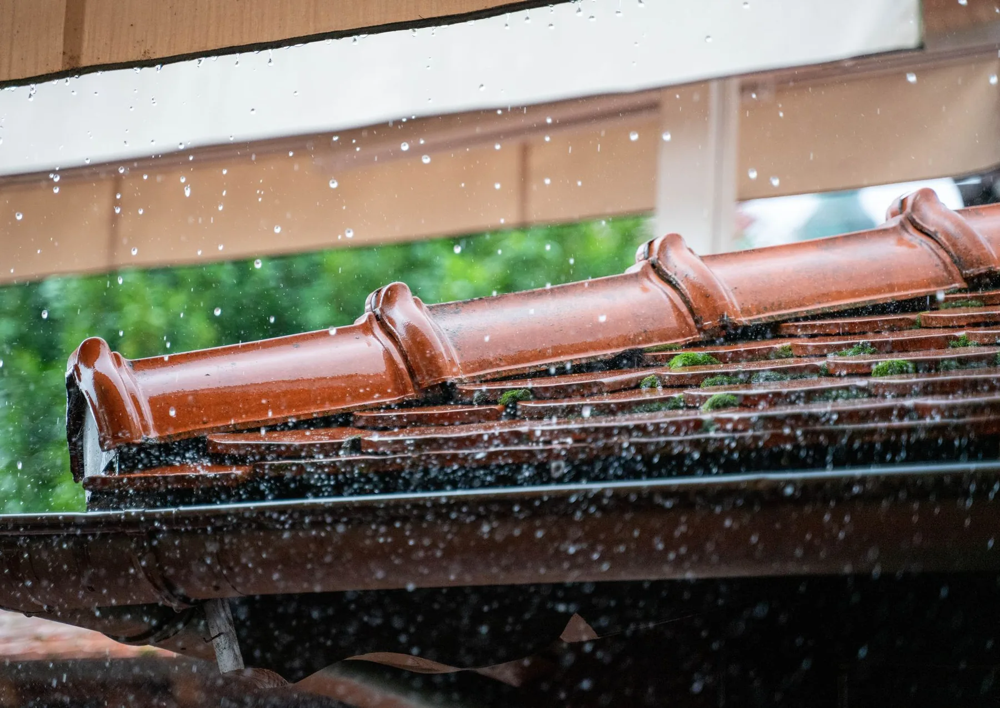
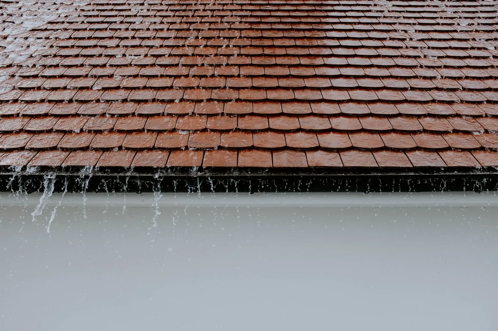
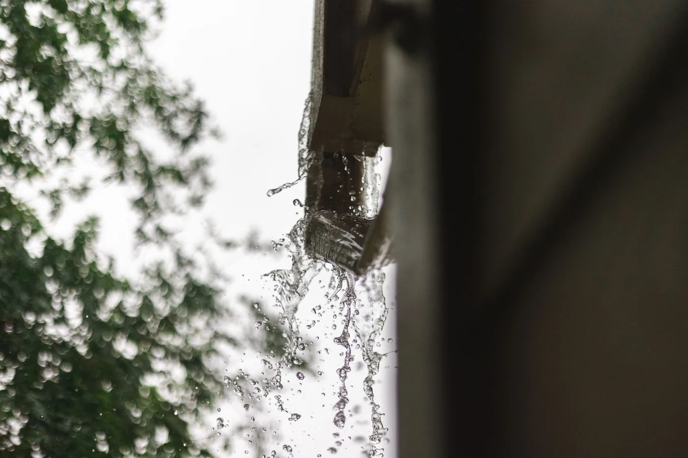
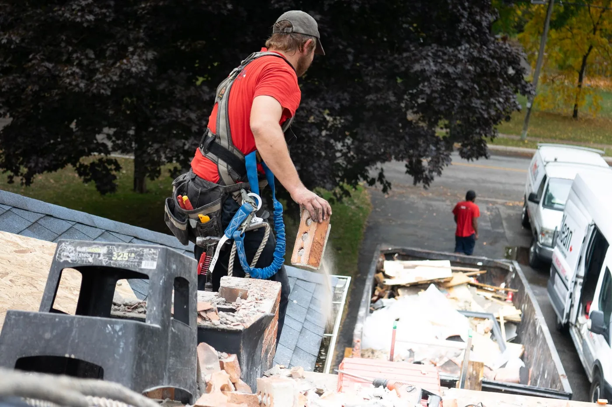

Gutter clearing
The whole run vacuumed out from the ground, every joint checked on the way past, and a photo of each section before and after so you can see exactly what came out of it.

Clearing rooflines across Birmingham since 2011
A blocked gutter does not drip, it redirects. Down the render, behind the fascia, into the cavity. We vacuum the whole run out from the ground, film it before and after, and watch the downpipes run clear before we pack up.
What we do
Gutters, downpipes, fascias and the joints that quietly leak down a wall for years.

The whole run vacuumed out from the ground, every joint checked on the way past, and a photo of each section before and after so you can see exactly what came out of it.

If it is running over the front edge, the blockage is usually at the outlet or a bend in the pipe. We rod it, flush it through, and stand there watching it run before we call it done.

Old union joints perish and drip down the same patch of wall for years. We reseal them, re-clip a run that has sagged, or swap a section where the plastic has gone brittle.
The green stripe under the roof line comes off with a soft wash rather than a jet, which is what keeps the paint on the board and the water out of the joint behind it.
A pole camera along the full run before anyone quotes anything. You get the footage either way, including the bits that show you do not need us yet.

Scheduled twice a year, one invoice, a photo report per property. Most agents put the whole portfolio on a single visit and forget about it until the report lands.
Reviews
Houses, landlords and one very patient block manager.
Water had been running down the back wall for two winters and we had convinced ourselves it was the render. It was one blocked outlet. Cleared in under an hour and the wall has been dry since.
They sent photographs of every gutter before and after, including the two that did not need touching. I have never had a trade show me the parts of the job they were not charging me for.
Eleven properties, done twice a year, one invoice and a photo report per address. It has taken gutters off my list entirely, which is the only review a managing agent ever wants to write.
How we work
Three things that decide whether a gutter job is done properly or just charged for.
A forty foot pole and a vacuum. No ladder leaning on the gutter you are paying us to look after, nothing standing in the borders, and nobody working at height over your conservatory.
Every run is filmed before and after on a pole camera. The report arrives with the invoice, so you are looking at your own roofline rather than taking our word for what was up there.
We quote from the run length and the height, not from a guess at your postcode. The number you are given on the phone is the number on the invoice, including the downpipes.
FAQ
Including the answers that tell you to leave it another year.
Once a year for most Birmingham houses, twice if you sit under trees. If you can see growth in the gutter from the pavement, it has been longer than a year and the outlet is probably already blocked.
Almost never. The vacuum and the camera both reach four storeys from the ground. If a run genuinely cannot be worked from below, we tell you before quoting rather than turning up and improvising on a ladder.
A standard three bedroom semi is 65 pounds for the full run front and back, downpipes included. Bigger elevations, three storeys and anything with a conservatory roof under it are priced before we start, not after.
Yes. Resealing a union joint, re-clipping a run that has dropped and swapping a brittle section are all done on the same visit if we find them and you agree the price on the spot.
It goes into the drum on the vacuum and leaves with us. Nothing gets tipped on the border, nothing gets left in a pile on the drive, and the downpipe gets flushed so the silt does not end up in the gully instead.
Contact
Tell us the address and whether it is running over right now. Overflows get seen the same day where we can, everything else goes in within the week.